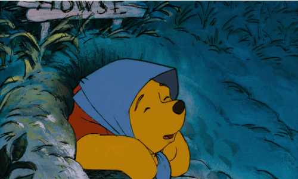

Dampak Positif
- Memudahkan komunikasi dan interaksi sosial
- Memperluas pergaulan
- Menyebarluaskan informasi dengan cepat
- Memfasilitasi pembelajaran dan berbagi pengetahuan
- Membantu dalam pemasaran dan bisnis
- Membantu dalam mengekspresikan diri
- Membantu dalam meningkatkan keterampilan sosial
- Membantu dalam meningkatkan kemampuan beradaptasi
Dampak Negatif
- Kecanduan media sosial
- Menurunkan kualitas hidup
- Meningkatkan risiko gangguan mental, seperti depresi
- Menjauhkan orang-orang yang sudah dekat
- Menurunkan interaksi secara tatap muka
- Menimbulkan konflik
- Masalah privasi
- Rentan terhadap pengaruh buruk orang lain
- Sulit mempertahankan fokus dan konsentrasi
- Termakan rumor tidak benar atau berita hoaks
PEMBAHASAN LAIN!!

PENGANTAR
Perkenalan dan Pengantar

MANFAAT
Manfaat Penggunaan Media Sosial

ETIKA
Etika menggunakan Media Sosial

PENGARUH TREND
Pengaruh Trend Media Sosial

CARA MENGATUR PENGGUNAAN
Cara Mengatur Penggunaan Media Sosial

MEDSOS UNTUK BISNIS
Penggunaan Media Sosial Untuk Bisnis